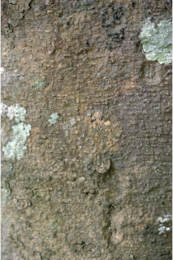

Images :



| Habit : | Trees ca. 12 m tall. |
| Leaves : | Leaves simple , alternate , distichous ; stipules lateral , pubescent , caducous and leaving scar ; petiole 1-1.5 cm long, canaliculate above, pubescent when young; lamina 4.5-11.5 x 2-5 cm, elliptic to elliptic-ovate , apex acute to acuminate , base rounded or acute , sometimes asymmetric , margin entire , chartaceous to coriaceous , glabrous ; 3-nerved at base; midrib raised above; secondary_nerves ca. 3 pairs; tertiary_nerves reticulo-percurrent . |
| Inflorescence / Flower : | N/A |
| Fruit and Seed : | N/A |